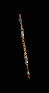

|

擺動剃刀
喬木棒
Razorswitch
Jo Staff |
雙手傷害: 6 - 21
(平均傷害13)
等級需求: 28
力量需求: 18
耐久度: 20
武器基本速度: [-10]
150% 對不死系生物傷害
+1 所有技能等級
30% 高速施法速度
法術傷害減少 15
所有抗性 +50
+175 法力
+80 生命
攻擊者受到傷害 15
|
|

肋骨粉碎者
六呎棍
Ribcracker
Quarterstaff |
雙手傷害:
(54-62) - (143-169)
(變動)
(平均傷害104)
等級需求: 31
力量需求: 25
耐久度: 130
武器基本速度: [0]
+200-300% 增強傷害
(變動)
增加 30-65 傷害
150% 對不死系生物傷害
50% 造成壓碎性打擊機率
50% 增加攻擊速度
50% 快速再度攻擊
+100% 防禦強化
+100 防禦
+15 敏捷
|
|

五彩的怒氣
杉木棍
Chromatic Ire
Cedar Staff |
雙手傷害: 11 - 32
(平均傷害21)
等級需求: 35
力量需求: 25
耐久度: 35
武器基本速度: [10]
150% 對不死系生物傷害
20% 高速施法速度
+3 法師技能等級
增加生命值上限 20-25%
(變動)
所有抗性 +20-40
(變動)
攻擊者受到閃電傷害 20
+1 支配冰冷 (限法師)
+1 支配閃電 (限法師)
+1 支配火焰 (限法師)
|
|

扭曲之矛
哥德之棍
Warpspear
Gothic Staff |
雙手傷害: 14 - 34 (平均傷害24)
等級需求: 39
力量需求: 25
耐久度: 40
武器基本速度: [0]
150% 對不死系生物傷害
忽視目標防禦
+250 對飛射性武器防禦
+3 法師技能等級
+3 能量護盾
(限法師)
+3 心靈傳動 (限法師)
+3 傳送
(限法師)
|
|

骷髏收集者
符文之棍
Skull Collector
Rune Staff |
雙手傷害: 24 - 58
(平均傷害41)
等級需求: 41
力量需求: 25
耐久度: 50
武器基本速度: [20]
150% 對不死系生物傷害
+20 法力在每殺死一名敵人後取得
增加法力上限 20%
+1-99% 更佳機率取得魔法物品
(依角色等級乘1)
+2 所有技能等級 |